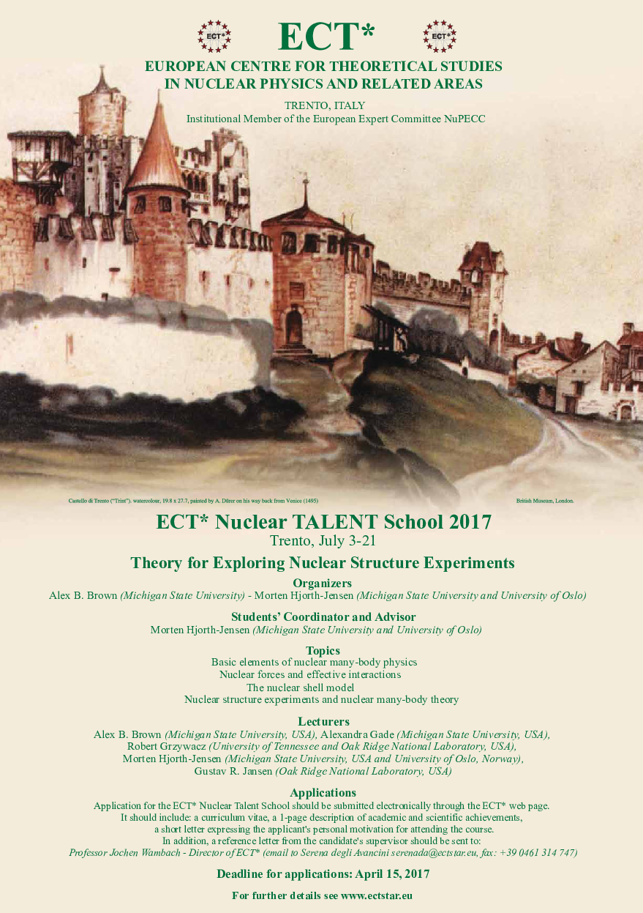

Applications are open for the 2017 TALENT course on Theory for exploring Nuclear Structure experiments. The recently established initiative, Nuclear TALENT (Training in Advanced Low Energy Nuclear Theory), see also http://www.nucleartalent.org, a multi-national network of several European and North American institutions, aims to develop a broad curriculum that will serve as a platform for cutting-edge theory of nuclei and their reactions.
This year the Nuclear TALENT initiative organizes a course on "Theory for Exploring Nuclear Structure Experiments" to be held at at The European Center for Theoretical Nuclear Physics and Related Areas (ECT*), Trento, Italy from July 3 to July 21 2017.
The deadline for applications is April 15, 2017. For more information on how to apply see http://ectstar.eu/node/797, see also http://ectstar.eu/node/2240. A detailed content list can be found at http://nucleartalent.github.io/NuclearStructure/doc/web/course.html.
The target groups are Master of Science and PhD students and early post-doctoral researchers, both experimentalists and theorists interested in models for nuclear structure, phenomenological techniques for interpreting and predicting the structure of stable as well as exotic nuclei. More experienced researchers may apply, but will be considered only on a fully-self-supported basis if numbers and space permit. Local support is available for at most 15-20 participants.
For additional information on each of the courses, please see http://www.nucleartalent.org. Prior to the TALENT course, the ECT* organizes a Doctoral Training program on Microscopic Theories of Nuclear Structure, Dynamics and Electroweak Currents from June 12 to June 30, 2017. The doctoral training program can be combined with the TALENT course. Applicants interested in attending the doctoral training program can find more information at http://ectstar.eu/node/2238.
